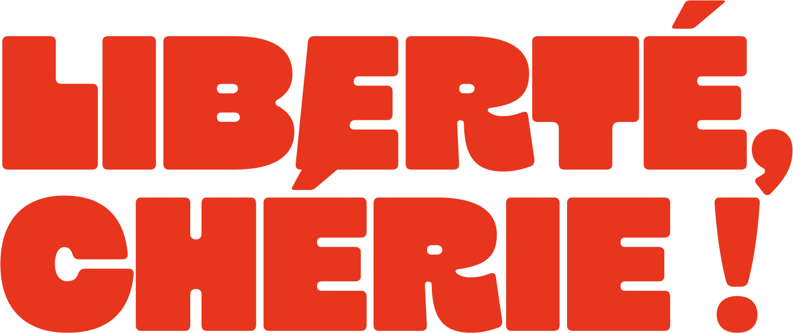

Présente !
le parcours de

Chemin
Journal
Carnet
Exercice · une semaine
On écrit ton exercice.
✓
On relit ce que tu viens de noter
On l’écrit avec tes mots
On le range dans ton chemin
Une dizaine de secondes. Tu peux rester ici.